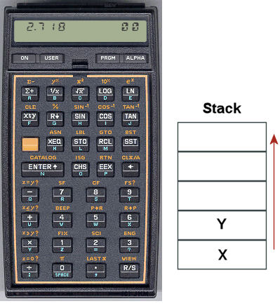

foldr, scanr, foldl, scanl. Вычислите несколько примеров в интерпретаторе:foldr (+) 0 [1,2,3] foldr (+) 10 [1,2,3] foldr (-) 0 [1,2,3] foldr (-) 10 [1,2,3] foldl (-) 0 [1,2,3] foldl (-) 10 [1,2,3] scanr (+) 0 [1,2,3] scanl (-) 0 [1,2,3]
fromBase, транслирующую список цифр в заданной системе счисления в целое число:
fromBase 10 [1,2,3] ==> 123 -- это целое число fromBase 2 [1,1,0,1] ==> 13
scanl.minCount :: Ord a => [a] -> (a, Int) minCount [] = error "List is empty" minCount (x:xs) = foldl count _ xs where count (r, c) x | x == r = _ | x < r = _ | otherwise = _
Свёртка (катаморфизм) — это абстракция последовательной обработки индуктивных данных. Это означает, что любую задачу, сводимую к обработке списка элемент за элементом можно решить при помощи свёртки.
length, map и filter.foldr и foldl. map, filter, reverse, any, all, length.Со времени появления калькуляторов HewlettPackard и MK-36 прошло более сорока лет. Они отличались от обыкновенных, во-первых, тем, что были стековыми, а во-вторых -- программируемыми. И это не случайно. Стековые вычисления очень хорошо подходят для написания несложных программ для примитивного вычислителя. Принцип вычислений, который они реализовали остался актуален и используется тогда, когда есть необходимость производить вычисления на очень ограниченных вычислительных мощностях. В наше время стековые языки программирования нашли применение в виртуальных машинах: это языки для JVM для платформы Java и вычислителя CLR для .Net, для управления роботами: язык FORTH, и, наконец, язык программирования для управления принтерами PostScript. Всё это необычные, предельно простые языки с примитивной грамматикой, программы на которых с непривычки непросто писать, но необычайно просто выполнять.
Мы реализуем простейший стековый калькулятор, не обладающий полнотой по Тьюрингу, но позволяющий вычислять арифметические выражения произвольной сложности. Программы представляют собой выражения, записанные в обратной польской нотации. Обратной польской нотацией (ОПН) называется способ записи арифметических и логических выражений, который совмещает в себе простоту интерпретации с компактностью записи. Единственный недостаток ОПН -- плохая читаемость выражений человеком. Однако, так как эта форма используется, чаще всего, как внутреннее представление вычислений на одном из промежуточных этапов трансляции программ, человеку писать и читать ОПН не приходится.
Отличительной особенностью ОПН является то, что все аргументы расположены перед знаком операции. В общем виде запись состоит из линейной последовательности операндов и знаков операций:
| выражение | запись в ОПН |
1 2 + | |
1 2 3 * + | |
1 2 + 3 * | |
1 2 + 3 4 - * |
Вычисление выражений в обратной польской нотации использует стек. Приведём алгоритм вычисления для стековой машины:
Простейшая его реализация очень изящна и хорошо показывает принцип модульности: задача разбивается на отдельные логически замкнутые части (функции), которые комбинируюясь дают общее решение.
Начнём с описания интерпретации отдельных команд:
команда | стек | результат --------|-------|----------- число n | s | n:s --------|-------|----------- "+" | x:y:s | (x + y):s --------|-------|----------- "*" | x:y:s | (x * y):s --------|-------|----------- "-" | x:y:s | (y - x):s --------|-------|----------- "/" | x:y:s | (y / x):s
Как видно, мы оперируем стеком, содержащим числа и строковыми командами, которые управляют состоянием стека. Определим для них типы:
type Command = String type Stack = [Double]
Таблицу команд легко описать как определение функции interprete:
interprete :: Stack -> Command -> Stack interprete (x:y:s) "+" = (x+y):s interprete (x:y:s) "*" = (x*y):s interprete (x:y:s) "-" = (y-x):s interprete (x:y:s) "/" = (y/x):s interprete s n = (read n):s
С её помощью выражение "2 3 +" можно вычислить так:
interprete (interprete (interprete [] "2") "3") "+"
Это же левая свёртка! Замечательно. Значит, наш калькулятор можно описать в виде свёртки:
Начнём разработку калькулятора с анализа типов. Калькулятор должен принимать строку-программу и преобразовывать стек в соответствии с ней.
calculator :: Program -> Stack -> Stack
Например, функция calculator "2 +" может преобразовать стек [3] в [5], добавив в него двойку и произведя сложение.
Далее, задача разбивается на два этапа: лексический анализ и выполнение отдельной команды:
Наконец, интерпретатор, имея в своём распоряжении исполнитель, может преобразовать последовательность команд в преобразование стека:parser :: Program -> [Command] process :: Stack -> Command -> Stack
Сопоставляя типы, можно видеть, что калькулятор можно представить в виде композиции лексера и интерпретатора:interpretor :: [Command] -> Stack -> Stack
В свою очередь, вычислитель можно реализовать посредством правой свёртки, в которой последние два арумента поменяны местами. Свёртка из обработчика одной команды позволяет создать обработчик последовательности команд. Наконец, роль стека может выполнять список чисел, напримерcalculator = interpretor . parser
[Float], а в качестве команд мы будем использовать строку.
Напишем определение для функции-исполнителя команд process s op, которая реализует базовые арифметические операции на стеке-списке
Для преобразования строки в число использована функцияprocess op s = case op of "+" -> x+y : s'' "*" -> x*y : s'' "-" -> y-x : s'' "/" -> y/x : s'' "n" -> (-x) : s' n -> read n : s where (x:s') = s (y:s'') = s'
read.
words.foldl на scanl и реализуйте лог выполнения программы. Вывести лог на печать можно с помощью функции mapM_ print Вам может понядобиться функция-- повторение верхнего элемента 1 2 3 4 d ⟹ 4 4 3 2 1 -- вращение двух верхних элементов 1 2 3 4 s ⟹ 3 4 2 1 -- копирование указанного элемента стека 1 2 3 4 1 i ⟹ 4 4 3 2 1 -- копирование последнего элемента 1 2 3 4 2 i ⟹ 3 4 3 2 1 -- копирование предпоследнего элемента 1 2 3 4 3 i ⟹ 2 4 3 2 1 -- копирование третьего сверху элемента -- копирование нескольких верхних элементов стека 1 2 3 4 1 c ⟹ 4 4 3 2 1 -- копирование одного элемента 1 2 3 4 2 c ⟹ 4 3 4 3 2 1 -- копирование двух элементов 1 2 3 4 3 c ⟹ 4 3 2 4 3 2 1 -- копирование трёх элементов -- вращение нескольких верхних элементов стека 1 2 3 4 2 1 r ⟹ 4 3 2 1 -- вращение двух элементов на один шаг 1 2 3 4 3 1 r ⟹ 3 2 4 1 -- вращение трех элементов на один шаг 1 2 3 4 3 2 r ⟹ 2 4 3 1 -- вращение трех элементов на два шага
splitAt, входящая в стандартную библиотеку.
norm = "..." calculator norm [3,4] ⟹ [25]
poly2 = "..." calculator poly2 [2,1,0,1] ⟹ [5] calculator poly2 [10,2,4,1] ⟹ [241]
[c, b, a] корни квадратного уравнения roots = "..." calculator roots [1,-2,1] ⟹ [1,1] calculator roots [-6,1,1] ⟹ [2,-3] calculator roots [1,0,1] ⟹ [NaN,NaN]
roots и poly2 проверьте, что они работают корректно, подставляя найденные корни полинома в полином.